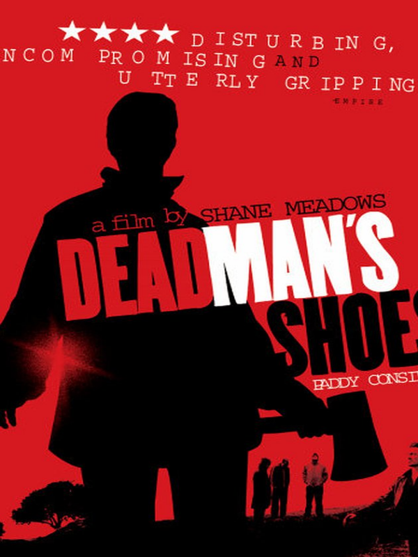

Library
Hot Fuzz As a former London constable, Nicholas Angel (Simon Pegg) finds it difficult to adapt to his new assignment in the sleepy British village of Sandford. Not only does he miss the excitement of the big city, but he also has a well-meaning oaf (Nick Frost) for a partner. However, when a series of grisly accidents rocks Sandford, Nick smells something rotten in the idyllic village.
Release date: 14 February 2007
Cast: Simon Pegg, Edgar Wright
28 Days Later A group of misguided animal rights activists free a caged chimp infected with the "Rage" virus from a medical research lab. When London bike courier Jim (Cillian Murphy) wakes up from a coma a month after, he finds his city all but deserted. On the run from the zombie-like victims of the Rage, Jim stumbles upon a group of survivors, including Selena (Naomie Harris) and cab driver Frank (Brendan Gleeson), and joins them on a perilous journey to what he hopes will be safety.
Release date: 1 November 2002
Cast:Alex Garland
Gravity Dr. Ryan Stone (Sandra Bullock) is a medical engineer on her first shuttle mission. Her commander is veteran astronaut Matt Kowalsky (George Clooney), helming his last flight before retirement. Then, during a routine space walk by the pair, disaster strikes: The shuttle is destroyed, leaving Ryan and Matt stranded in deep space with no link to Earth and no hope of rescue. As fear turns to panic, they realize that the only way home may be to venture further into space.
Release date: 7 November 2013
Cast: Sandra Bullock, George Clooney
- 
Dead Man's Shoes A soldier (Paddy Considine) returns home to his small town and exacts a deadly revenge on the thugs who tormented his dimwitted brother (Toby Kebbell) while he was away. One by one the young hoodlums meet their fates as the soldier releases the hate he feels inside.
Release date: 1 October 2004
Cast: Shane Meadows, Paddy Considine, Paul Fraser